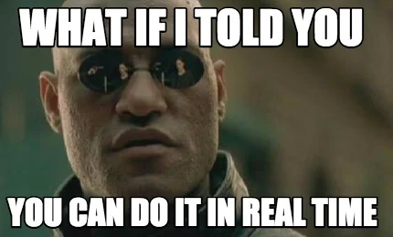
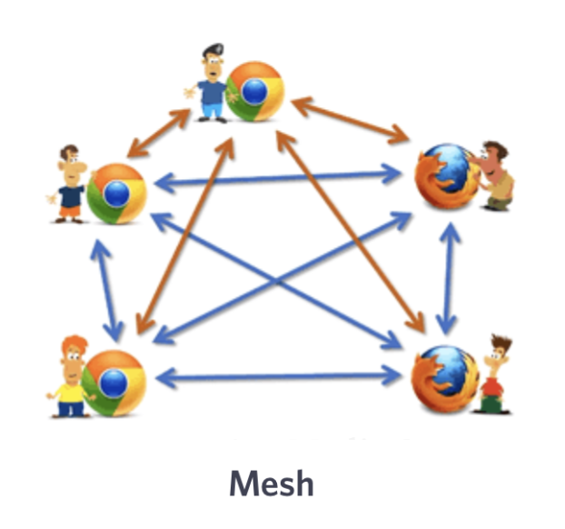
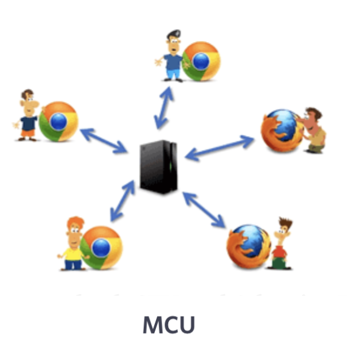
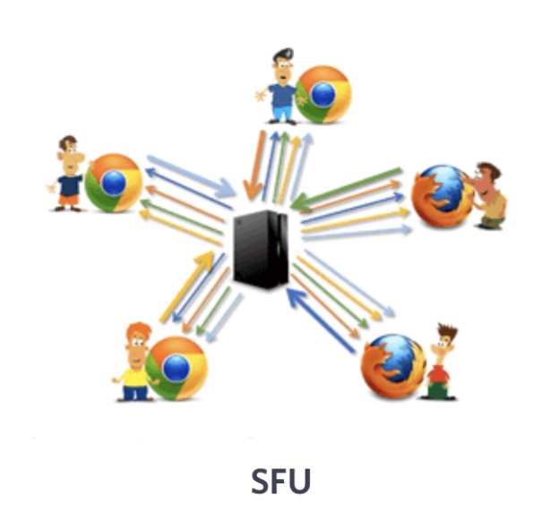

Navigating the WebRTC Wonderworld: Exploring Peer-to-Peer Magic✨
Have you ever wondered how video calls magically happen in your browser?
I recently developed a project where I explored in-depth about what WebRTC is and how does it actually works.
I will try to explain everything about it here in plain english! I hope you like reading it. :)
Ready? Let's go!
I recently developed a project where I explored in-depth about what WebRTC is and how does it actually works.
I will try to explain everything about it here in plain english! I hope you like reading it. :)
Ready? Let's go!

What is WebRTC?
WebRTC stands for Web Real-Time Communication. It's like the
internet's way of saying, "Hey, let's have a direct conversation without
any middlemen!" ✨
In simpler terms, WebRTC lets you make video and audio calls, share files, and even play games with your friends in real-time, all straight from your web browser. No need to download extra apps or plugins! 🚀🌐

WebRTC is the "behind-the-scenes" wizardry that connects your browser
directly to your friends' browsers, creating a
peer-to-peer connection. 🧙♂️🔗
Now, let's understand what a peer is and what is a peer-to-peer connection?
In simpler terms, WebRTC lets you make video and audio calls, share files, and even play games with your friends in real-time, all straight from your web browser. No need to download extra apps or plugins! 🚀🌐
Now, let's understand what a peer is and what is a peer-to-peer connection?
What is Peer-to-Peer Connection?
Alright, let's dive into the world of "peers" and "peer-to-peer"
connections! 🌐🤗
Imagine you and your friend are having a secret chat. In this techy scenario, you and your friend are like peers. 👫🌟 Each of you has equal powers, and you can talk directly to each other without any middle person getting in the way. It's like having a private conversation in a crowded room! 🗣️🔒
Now, let's apply this idea to the digital realm. In the magical land of the internet, devices like your computer or smartphone can also be peers. 🖥️📱 And when these devices connect directly to each other to share information without bothering servers or intermediaries, that's what we call a peer-to-peer (P2P) connection! 🌐🔗
These connections are super handy for things like video calls, online
gaming, and sharing files quickly. It's like having a digital
walkie-talkie with your pals. 📞🎮📁 And the best part? Peer-to-peer
connections can be faster and more private since your data takes the
express route between you and your buddy. 🚀🔒
Simple right? Let's dive a little more
Its important to understand a few things quickly before moving on. I'll briefly list them down.
There are tons of resources available on the internet to read for each of them :)
1. Offer: When two devices want to connect, one generates an invitaion called offer for the other device and sends it. Another device recieves this offer and generates an answer for the first device that includes the communication details.
This is called a handshake.
2. Singaling: To exchange the offers and answers, and sort of
complete the handshake, we need a something called a "Singaling-Server".
It basically lets them share details of offer and answer via a seperate
mechanism.
3. ICE (Interactive Connectivity Establishment): ICE Servers helps devices discover the best way to communicate, especially if they're behind different network obstacles.
4. STUN and TURN Servers: Direct connections are tricky due to obvious network restrictions. To tackle this we have something called STUN and NAT. Without going much into details, STUN servers reveals the public addresses, and TURN acts as a relay.
If that was difficult to understand, don't worry! most of these
things are pretty easy to implement and handled internally.
Imagine you and your friend are having a secret chat. In this techy scenario, you and your friend are like peers. 👫🌟 Each of you has equal powers, and you can talk directly to each other without any middle person getting in the way. It's like having a private conversation in a crowded room! 🗣️🔒
Now, let's apply this idea to the digital realm. In the magical land of the internet, devices like your computer or smartphone can also be peers. 🖥️📱 And when these devices connect directly to each other to share information without bothering servers or intermediaries, that's what we call a peer-to-peer (P2P) connection! 🌐🔗
Simple right? Let's dive a little more
Its important to understand a few things quickly before moving on. I'll briefly list them down.
There are tons of resources available on the internet to read for each of them :)
1. Offer: When two devices want to connect, one generates an invitaion called offer for the other device and sends it. Another device recieves this offer and generates an answer for the first device that includes the communication details.
This is called a handshake.
3. ICE (Interactive Connectivity Establishment): ICE Servers helps devices discover the best way to communicate, especially if they're behind different network obstacles.
4. STUN and TURN Servers: Direct connections are tricky due to obvious network restrictions. To tackle this we have something called STUN and NAT. Without going much into details, STUN servers reveals the public addresses, and TURN acts as a relay.
Types of network between P2P:
Imagine a lot of users connecting at once (like a zoom meeting). How
would each user connect to every other user? Is there any sort of
structure?
Yes! Mainly, there are 3 types:
1. MESH
In a MESH network, devices directly connect to every other device in a web-like structure. Imagine a bunch of friends at a party, all chatting with each other. It's a decentralized setup where each device is a peer, ensuring direct communication between participants. However, it can get pretty overwhelming and inefficient as the party gets bigger.

2. MCU (Multipoint Control Unit) 🎛️:
Picture a party with a charismatic host. An MCU is like that host, managing the connections and mixing audio and video streams from participants. It's useful for larger gatherings, but like a host juggling conversations, it can become a bottleneck if the number of participants skyrockets.

3. SFU (Selective Forwarding Unit)
Imagine a chatroom where only relevant messages are broadcasted. An SFU does this for media streams. It receives all the streams and selectively forwards them to the right participants. This way, it's like having separate dance floors at the party, each catering to a different groove.

Yes! Mainly, there are 3 types:
1. MESH
In a MESH network, devices directly connect to every other device in a web-like structure. Imagine a bunch of friends at a party, all chatting with each other. It's a decentralized setup where each device is a peer, ensuring direct communication between participants. However, it can get pretty overwhelming and inefficient as the party gets bigger.
Picture a party with a charismatic host. An MCU is like that host, managing the connections and mixing audio and video streams from participants. It's useful for larger gatherings, but like a host juggling conversations, it can become a bottleneck if the number of participants skyrockets.
Imagine a chatroom where only relevant messages are broadcasted. An SFU does this for media streams. It receives all the streams and selectively forwards them to the right participants. This way, it's like having separate dance floors at the party, each catering to a different groove.
Conclusion 🎺
And with that, dear reader, we've uncovered the captivating world of WebRTC! 🌐🎉 From its spellbinding peer-to-peer connections that whisk your conversations across continents, to its magical media streaming that turns your voice and video into virtual wonders, WebRTC has truly transformed the way we connect online. 🧙♂️💬✨

Happy Coding!❤️